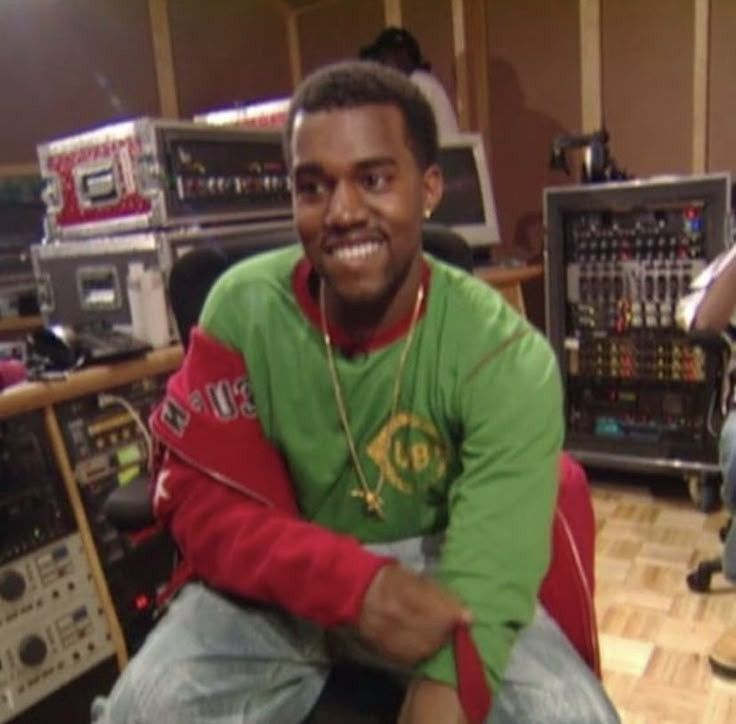
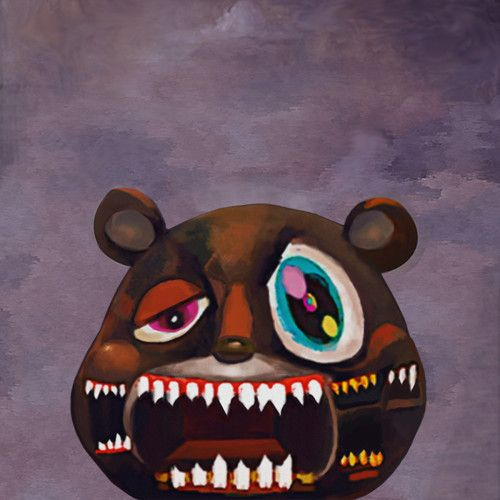
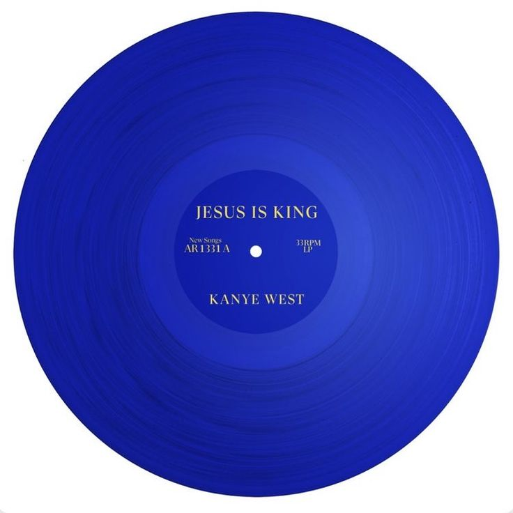
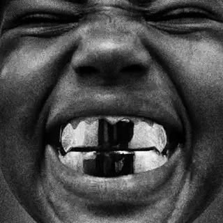

Biografía
Kanye Omari West
Shows
Inicio
Menu
Nacido en Atlanta y criado en Chicago, West ganó popularidad a principios de los años 2000 como productor
para la discográfica Roc-A-Fella Records, produciendo varios sencillos exitosos para
artistas populares de esa época. A pesar de alcanzar prestigio por sus producciones, West quería
perseguir una carrera como un rapero y un artista en solitario. Tras haber sido rechazado por varias
discográficas, West acabó firmando con Roc-A-Fella o Roc-A-Fella lo contrató para producir un álbum.
Luego de haber sufrido un accidente de coche casi fatal en 2002, West lanzó su álbum de estudio debut
The College Dropout (2004), que obtuvo el reconocimiento de la crítica y del público por representar
un soplo de aire fresco frente a la bling-bling era del gangsta rap, gracias a su estilo musical
basado en sampleos acelerados de canciones clásicas de soul y sus líricas acerca de la familia, la
educación superior, la cristiandad y las problemáticas de la clase media. Su secuela, Late Registration (2005),
estableció a West como uno de los artistas más codiciados e importantes de la escena musical, marcando su primer
número uno, y la tercera y última entrega de su trilogía, Graduation (2007), mostró a West inclinándose más hacia el
pop o apostando más por el pop y el electro-dance, obteniendo su lanzamiento más exitoso a nivel comercial hasta ese momento.
Luego de un periodo tumultuoso en su vida privada que involucró el fallecimiento de su madre y la separación con su prometida,
West lanzó 808s & Heartbreak (2008), donde la utilización del Auto-Tune y su paleta musical se volvería extremadamente
influyente.
.jpg)
.jpg)
Tras su incidente en los MTV Video Music Awards con Taylor Swift en 2009, West se auto-exilió en
Hawái, donde empezaría a trabajar en la moda y produciría su quinto álbum de estudio, My Beautiful Dark
Twisted Fantasy (2010) , que marcó su retorno al rap y la aclamación multitudinaria de la crítica y el
público por sus estilos maximalistas, su amplia lista de colaboradores y sus temáticas acerca de la fama
y su vida personal. A partir del lanzamiento del álbum colaborativo Watch the Throne (2011) con Jay-Z,
West empezaría a experimentar con el lanzamiento de sus álbumes Yeezus (2013) y The Life of Pablo (2016),
que incluirían géneros como hip-hop industrial, gospel y rap progresivo. Por el controversial y caótico tour
de The Life of Pablo, West terminó internado por sufrir una crisis nerviosa y la agravación de su salud
mental. Regresó en 2018 con las sesiones de Wyoming, en las que produjo cinco álbumes de estudio,
incluyendo sus lanzamientos personales ye y el álbum colaborativo Kids See Ghosts (junto con Kid Cudi).
Durante estos años, West empezaría a enfrentarse con el escrutinio constante de los tabloides
por sus opiniones controversiales acerca de la esclavitud y el racismo, que provocarían que se volcara al
catolicismo cristiano con el lanzamiento de su álbum de góspel Jesus is King (2019) y la formación de
su grupo de gospel Sunday Service Choir.
Las opiniones abiertas de West y su vida fuera de la música han recibido una atención significativa de los
medios. Ha sido una fuente frecuente de controversia por su conducta en los premios, en las redes sociales
y en otros entornos públicos, así como por sus comentarios sobre la industria musical y la moda, la
política estadounidense y la raza. En 2020, dirigió una campaña presidencial independiente que abogó
por una ética de vida consistente. West es un cristiano practicante y sus puntos de vista religiosos,
así como su matrimonio con la personalidad de televisión Kim Kardashian, han sido una fuente de atención
sustancial de los medios. Como diseñador de moda, ha colaborado con Nike, Louis Vuitton y APC tanto en
ropa como en calzado, y ha dado lugar de manera más destacada a la colaboración de Yeezy con adidas a
partir de 2013. Es el fundador y jefe de la compañía de contenido creativo DONDA.
Es uno de los artistas musicales más exitosos de todos los tiempos, con más de 100 millones de discos vendidos
en todo el mundo. Ha ganado un total de 24 premios Grammy, lo que lo convierte en uno de los artistas más
premiados de todos los tiempos. Cinco de sus álbumes han sido incluidos y clasificados en la actualización
del año 2020 en la lista de "Los 500 mejores álbumes de todos los tiempos" según la revista Rolling Stone y
está empatado con Bob Dylan por la mayoría de los álbumes que encabezan la encuesta anual de crítica de Pazz &
Jop con cuatro en total. La revista Time lo nombró una de las 100 personas más influyentes del mundo en 2005 y
2015.

.jpg)
Primeros años
La mayoría de fuentes biográficas y referencias declaran que West nació el 8 de junio de 1977 en Atlanta,
Georgia, a pesar de que algunas fuentes citan que su lugar de nacimiento es en realidad Douglasville, un
pequeño pueblo de Atlanta. Luego de que sus padres se divorciaran cuando tenía tres años, se mudó
junto a su madre a Chicago, Illinois. Su padre, Ray West, fue miembro de las Panteras Negras durante
los 60 y 70, y fue uno de los primeros periodistas fotográficos de tez negra en trabajar para el periódico
The Atlanta Journal-Constitution. Ray luego se convirtió en un consejero cristiano, y en 2006 abrió la
cafetería y aguatería Good Water Store and Café en el pueblo de Lexington Park con el capital inicial de su
hijo. La madre de West, la Dr. Donda C. West, era una profesora de inglés en la Universidad de Clark
Atalanta, y ministra del Departamento de Inglés en la Universidad Estatal de Chicago, antes de volverse su
mánager. West fue criado en un ambiente de clase media, atendiendo la Escuela Polaris para la educación
individual en el suburbio de Oak Lawn, Illinois, después de vivir en Chicago. Con diez años, West
se mudó con su madre a Nankín, China, donde ella estaba enseñando para la Universidad de Nankín como parte
de un programa de intercambio. Según su madre, West era el único estudiante extranjero de su clase, pero se
adaptó bien y captó rápido el lenguaje, a pesar de que se olvidó de la mayor parte después. Cuando le
preguntaron sobre sus notas en el secundario, West respondió "Sacaba solo As y Bs, y ni siquiera estoy
alardeando".
West demostró tener afinidad por el arte a una edad temprana; con solo cinco años empezó a escribir poesía.
Su madre recordó después que se dio cuenta de la pasión de West por el dibujo y la música cuando él
estaba en tercer grado. West empezó a rapear en tercer grado y empezó a armar composiciones musicales
en séptimo grado, a veces vendiéndolas a otros artistas. Con trece años, West escribió una canción
llamada Green Eggs and Ham (el título de un exitoso libro infantil de Dr. Seuss) y convenció a su madre
de que pagara el tiempo en un estudio de grabación. Acompañándolo al estudio y a pesar de descubrir que
era un "pequeña base" donde un micrófono colgaba del techo por un cable para colgar ropa, la madre de
West lo apoyó y motivó a pesar de todo. West cruzó caminos con el productor/DJ No I.D., con quien
estableció una fuerte amistad. No I.D se convirtió en un mentor para West, y fue gracias a él que
aprendió a usar samples y programar beats cuando recibió su primer sampler con 15 años. Después
de graduarse de la secundaria, West recibió una beca para atender la Academia Estadounidense de Arte
de Chicago en 1997, y empezó a tomar clases de pintura; poco tiempo después, se cambió a la
Universidad Estatal de Chicago para estudiar Inglés. Pronto se dio cuenta de que su apretada agenda
de clases era perjudicial para su trabajo musical, por lo que con 20 años abandonó la universidad
para perseguir su sueño musical. Esto decepcionó enormemente a su madre, quien encima era
profesora en esa universidad. Ella luego comentaría: "Toda mi vida se me ha metido a la cabeza
que la universidad es el boleto hacia una buena vida... pero algunas metas profesionales no
requieren la universidad. Para Kanye, hacer un álbum llamado College Dropout se trataba más de tener
las agallas para abrazar quién eres, en lugar de seguir el camino que la sociedad te ha marcado
para tí".
1996-2002: primeros trabajos y Roc-A-Fella Records
Kanye West empezó su carrera musical a mediados de los 1990, creando beats primordialmente para
artistas locales, finalmente desarrollando un estilo particular que involucraban vocales aceleradas
con samples de canciones clásicas de soul. Sus primeros créditos oficiales como productor
ocurrieron cuando tenía diecinueve años y produjo ocho canciones para Down to Earth, el álbum
de debut de Grav, un rapero de Chicago. Por un tiempo, West se mantuvo como un productor
fantasma de “D-Dot” Angelettie. Debido a su asociación con D-Dot, West no pudo publicar un
álbum en solitario, por lo que formó un grupo de rap de Chicago llamado The Go-Getters a finales
de la década de 1990, del cual fue tanto productor como miembro, el grupo estaba conformado por
GLC, Timmy G, Really Doe, Arrowstar y él mismo.Su grupo fue gestionado por John “Monopoly” Johnson, Don Crowley, y Happy Lewis bajo la empresa de gestión Hustle Period.
Después de numerosos photo shoots promocionales y algunas apariciones en radio,
The Go-Getters publicaron su primer y único álbum de estudio, World Record Holders en 1999.
El álbum incorporó a otros raperos de Chicago como Rhymefest, Mikkey Halsted, Miss Criss y
Shayla G. Mientras tanto, la producción fue controlada por West, Arrowstar, Boogz y Brian
“All Day” Miller.
Luego de firmar con una empresa de gestión-producción llamada Hip-Hop Since 1978 en
1998, West se mantuvo como productor de varios artistas y grupos musicales conocidos lamayor parte de los últimos años de la década de 1990.[26] La tercera canción en el
segundo álbum de estudio de Foxy Brown, llamado Chyna Doll, fue producida por West.
Subsecuentemente, Chyna Doll se convirtió en el primer álbum femenino de hip-hop en
debutar al tope del Billboard 200 de Estados Unidos durante su primera semana de venta. West produjo
tres de las canciones del álbum The Movement, el primer y único álbum de Harlem World junto con
Jermaine Dupri y los Trackmasters, un dúo de productores. Sus canciones incluyeron a los raperos Nas,
Drag-On y el cantante de R&B Carl Thomas. La novena canción de World Party, el último álbum de
Goodie Mob que incluyó a los cuatro miembros fundadores previo a la separación del grupo, fue coproducido
por West y su gerente Deric “D-Dot” Angelettie. Al fin del milenio, West produjo seis canciones en el
álbum Tell Em Why U Madd, que fue publicado por D-Dot bajo el alias “The Madd Rapper”; un personaje
ficticio creado para un sketch satírico en el segundo y último álbum de estudio de The Notorious B.I.G.,
Life After Death. Las canciones de West incluyeron de invitados a otros raperos como Ma$e, Raekwon y
Eminem.
West obtuvo su gran oportunidad en el año 2000, cuando comenzó a producir para músicos en Roc-A-Fella Records. Posterior a esto, West comenzó a recibir reconocimiento, e incluso se le acredita con haber revivido la carrera de Jay-Z por sus contribuciones a su álbum del 2001, The Blueprint.[27] Frecuentemente considerado como uno de los mejores álbumes de hip-hop, el éxito comercial y crítico de The Blueprint generó un gran interés por West como productor.[28] West, consecuentemente, se convirtió en uno de los más reconocidos productores de hip-hop tras la grabación del aclamado álbum de Jay-Z, vendiendo más de 85 millones de copias en el que se destacaban cuatro temas producidos por él, el más notable es el sencillo principal "Izzo (H.O.V.A.)", y el 'diss' a Nas y Prodigy "Takeover". Debido a su aspecto y estilo global, West trabajó arduamente por crear su propia voz y estilo musical en sus grabaciones. Actuando como productor interno de Roc-A-Fella Records, West produjo pistas para otros músicos de la firma, entre ellos Beanie Sigel, Freeway y Cam’ron. También produjo canciones exitosas para Ludacris, Alicia Keys y Janet Jackson.[27]
A pesar de su éxito como productor, el verdadero y principal anhelo de West era ser un rapero.
Aunque ya había trabajado en sus habilidades de rap mucho antes de comenzar a servir como productor,
fue un reto para West ser acogido y aceptado por los demás como rapero, además de que batalló por obtener
un contrato de grabación. Varias discográficas lo ignoraron porque no representaba la imagen “gangsta”
popular en el hip-hop en ese momento. Después de múltiples reuniones con Capitol Records, a West se le
negó un contrato.
De acuerdo a Joe Weinberger, el A&R de Capitol Records, West sostuvo conversaciones con él y casi logra
formular un contrato, pero otro empleado convenció al presidente de Capitol Records que lo impidiera.
Desesperado por evitar que West desertara a otra discográfica, el entonces jefe de la discográfica
Roc-A-Fella, Damon Dash, aunque reacio a la situación, contrató a West. Posteriormente, Jay-Z admitió que
Roc-A-Fella estaba renuente a apoyar a West como rapero, alegando que muchos lo veían primero y más que
nada como un productor, y que sus antecedentes personales y culturales contrastaban con los de sus compañeros
de la discográfica.
El gran momento de West vino un año después, el 23 de octubre de 2002 cuando, regresando a
casa de trabajar tarde en un estudio de grabación en California, se durmió al volante mientras conducía y
sufrió un accidente automovilístico que casi lo mata. El choque le fracturó severamente la mandíbula, y
tuvo que ser cerrada con alambres durante la cirugía reconstructiva. El accidente inspiró a West, pues,
dos semanas después de que le ingresaran en el hospital, grabó una canción en Record Plant Studios con su
mandíbula aún cerrada. La canción resultante, Through The Wire, narra la experiencia de West después del
accidente, además de que estableció las bases para su álbum debut, ya que, según West “todos los buenos
artistas han expresado y manifestado lo que sea que estuvieran padeciendo.” West añadió que
“el álbum fue mi medicina”, pues el concentrarse en el disco lo distrajo del dolor. “Through The Wire”
se publicó por primera vez en el mixtape Get Well Soon… de West que salió a la venta en diciembre del 2002.
Al mismo tiempo, West anunció que estaba trabajando en un álbum llamado The College Dropout, cuyo tema
unificador era el de "tomar tus propias decisiones. No dejes que la sociedad te diga,esto es lo que debes
hacer'".
2003-2005: The College Dropout y Late Registration
West grabó el resto del álbum en Los Ángeles mientras se recuperaba de su accidente de auto. Una vez completado, fue filtrado meses antes de su lanzamiento oficial. Sin embargo, West aprovechó esa oportunidad para revisarlo, y The College Dropout fue remixado, remasterizado y revisado antes de su estreno, lo que hizo que su lanzamiento se pospusiera tres veces desde agosto de 2003.El álbum fue lanzado por Roc-A-Fella Records en febrero de 2004, debutando en el número dos del Billboard 200. Su primer sencillo, Through the Wire, alcanzó el puesto quince en el Billboard Hot 100. Slow Jamz, con Twista y Jamie Foxx, se convirtió en el primer número uno de los tres músicos. El álbum recibió aclamación casi universal, fue votado como el mejor álbum del año por dos importantes publicaciones musicales y obtuvo 10 nominaciones al Grammy, incluyendo Álbum del año y Mejor álbum de rap, premio que acabó recibiendo. Jesus Walks, el cuarto sencillo, expuso a West a una audiencia más amplia gracias a su temática de fe y cristianismo, alcanzando el top 20 a pesar de las predicciones de la industria.Durante este período, West fundó GOOD Music, un sello discográfico que albergaría artistas como No I.D. y John Legend. Decidió buscar un nuevo sonido alejándose del uso excesivo de samples vocales acelerados de soul. Para su segundo álbum, invirtió alrededor de dos millones de dólares y colaboró con el compositor Jon Brion, incorporando una orquesta de cuerdas inspirado en el álbum en vivo Roseland NYC Live de Portishead. Late Registration vendió más de 2,3 millones de unidades en EE. UU. a finales de 2005.Su primera controversia a gran escala ocurrió durante un concierto benéfico por las víctimas del huracán Katrina, cuando West se desvió del guion en la NBC y declaró: "A George Bush no le importan los negros", provocando reacciones encontradas en todo el país. En enero de 2006 generó más controversia al posar en la portada de Rolling Stone con una corona de espinas.


2007-2009: Graduation, 808s and Heartbreak y controversia en los VMAs
Tras girar por el mundo con U2 en su Vertigo Tour, West se inspiró para crear canciones como "himnos" para grandes escenarios, incorporando sintetizadores, tempos más lentos y elementos de música electrónica de los 80. También se inspiró en bandas como Rolling Stones y Led Zeppelin, y comenzó a escuchar a Bob Dylan y Johnny Cash para desarrollar su narrativa lírica.
Su tercer álbum, Graduation, generó gran expectativa al enfrentarse en ventas contra Curtis de 50 Cent. Graduation ganó por amplio margen, debutando en el número uno del Billboard 200 con 957.000 copias en su primera semana. El sencillo Stronger, que samplea al dúo francés Daft Punk, fue acreditado por impulsar la incorporación de elementos house y electrónica en el hip-hop y alentar el resurgimiento de la música disco a finales de los 2000.
La vida de West dio un giro cuando su madre, Donda West, murió en noviembre de 2007 a causa de complicaciones de una cirugía estética. Meses después, terminó su compromiso con Alexis Phifer. Estos eventos lo afectaron profundamente. Decidió canalizar sus emociones cantando con Auto-Tune, tecnología que se volvería central en su siguiente proyecto. 808s & Heartbreak, grabado principalmente en Honolulú en tres semanas, presenta un uso extensivo de la caja de ritmos Roland TR-808 y aborda temas de amor, soledad y angustia. Fue lanzado en noviembre de 2008 con críticas positivas, y sus sencillos Love Lockdown y Heartless debutaron en los primeros puestos del Billboard Hot 100. El álbum tuvo un efecto significativo en el hip-hop, alentando a otros raperos a tomar riesgos creativos.
En los MTV Video Music Awards 2009, West protagonizó su mayor controversia al subir al escenario y tomar el micrófono de Taylor Swift durante su discurso de aceptación, para proclamar que el video de Beyoncé para Single Ladies era "uno de los mejores videos de todos los tiempos". La gira Fame Kills con Lady Gaga fue cancelada como consecuencia. Ese mismo año, Billboard lo nombró Mejor Artista Masculino de 2009.
.webp)

2010–2012: My Beautiful Dark Twisted Fantasy y colaboraciones
Tras el incidente de los VMas, West se tomó un descanso y luego se encerró en Hawái para grabar su siguiente álbum, manteniendo a sus ingenieros trabajando las 24 horas. Colaboraron artistas como Jay-Z, Kid Cudi, Pusha T y Justin Vernon de Bon Iver.
My Beautiful Dark Twisted Fantasy fue lanzado en noviembre de 2010 con aclamación de la crítica, siendo considerado por muchos su mejor trabajo. A diferencia de su álbum anterior, adoptó una filosofía maximalista abordando temas de celebridad y excesos. Incluyó el hit internacional All of the Lights y éxitos como Power, Monster y Runaway, este último acompañado de un cortometraje de 35 minutos dirigido por el propio West. Durante este tiempo, West inició el programa GOOD Fridays, ofreciendo descargas gratuitas de canciones inéditas cada viernes. El álbum fue certificado platino en EE. UU., aunque su omisión como candidato al Álbum del año en los Grammy fue considerada un "desaire" por varios medios.
En 2011, West se embarcó en festivales como Lollapalooza y Coachella, este último nombrado por The Hollywood Reporter como uno de los mejores sets de la historia del hip-hop. Luego lanzó el álbum colaborativo con Jay-Z, Watch the Throne, uno de los primeros álbumes de la era de internet en evitar ser filtrado antes de su lanzamiento. Niggas in Paris fue su sencillo más exitoso, alcanzando el puesto cinco en el Billboard Hot 100. En 2012, lanzó el álbum recopilatorio Cruel Summer con artistas de GOOD Music , que produjo sencillos como Mercy y Clique, ambos en el top 20 del Hot 100. También dirigió una película estrenada en el Festival Internacional de Cine de Cannes.
.jpg)

2013–2015: Yeezus y colaboración con Adidas
Las sesiones para el sexto álbum de West comenzaron en París. Determinado a "socavar lo comercial", incorporó elementos de drill, dancehall, acid house y música industrial, primordialmente inspirado por arquitectura. Quince días antes del lanzamiento, contactó al productor Rick Rubin para revisar el sonido en favor de un enfoque más minimalista.
Yeezus fue lanzado el 18 de junio de 2013 con excelentes críticas, convirtiéndose en su sexto debut consecutivo en el número uno. La gira Yeezus Tour, con Kendrick Lamar como acto secundario, fue elogiada por Rolling Stone como "locamente entretenida y tremendamente ambiciosa". En junio de 2013, West y Kim Kardashian anunciaron el nacimiento de su hija North y su compromiso. En diciembre, Adidas anunció su colaboración oficial con West, dando inicio a Adidas Yeezy.
En mayo de 2014, West y Kardashian se casaron en Florencia, Italia. West lanzó el sencillo Only One con Paul McCartney en diciembre, seguido de FourFiveSeconds con Rihanna y McCartney en enero de 2015. En febrero estrenó su línea de ropa Yeezy Season 1 con Adidas. En mayo recibió un doctorado honorario de la Escuela del Instituto de Arte de Chicago. En junio encabezó el Festival de Glastonbury, donde se proclamó "la estrella de rock viviente más grande del planeta", generando reacciones divididas. En septiembre interpretó 808s & Heartbreak en el Hollywood Bowl con una orquesta de 60 personas y más de 70 bailarines.
 - FU9006 - Wethenew.jpg)

2016–2017: The Life of Pablo y cancelación de tour
West anunció el álbum bajo distintos nombres —SWISH, luego Waves— antes de estrenarlo como The Life of Pablo el 11 de febrero de 2016 en el Madison Square Garden, junto a su tercera línea de Yeezy. Fue lanzado exclusivamente en Tidal el 14 de febrero, aunque más tarde llegó a otras plataformas. West continuó modificando las mezclas tras el lanzamiento, describiéndolo como una "expresión creativa de aire fresco".
En agosto de 2016 comenzó el Saint Pablo Tour, con un escenario móvil suspendido en el techo. En noviembre, West canceló las 21 fechas restantes tras una semana de ausencias y comportamiento errático, y fue admitido para observación psiquiátrica en el UCLA Medical Center, donde permaneció hospitalizado por una psicosis temporal derivada de falta de sueño y deshidratación extrema. Tras este episodio, se tomó un descanso de 11 meses de Twitter y del público.

.jpg)
2017–2019: Ye y las sesiones de Wyoming
En mayo de 2017 se reportó que West grababa nueva música en Jackson Hole, Wyoming. En abril de 2018 anunció dos nuevos álbumes: uno en solitario y otro junto a Kid Cudi bajo el nombre Kids See Ghosts. También reveló que produciría los próximos álbumes de Pusha T, Teyana Taylor y Nas.
Daytona de Pusha T fue el primero en salir, con alabanzas de la crítica. Luego llegó Ye, el octavo álbum de West, regrabado en menos de un mes. Le siguió Kids See Ghosts, junto a Kid Cudi, y las producciones de Nasir de Nas y K.T.S.E. de Teyana Taylor. West anunció posteriormente que su noveno álbum se titularía Yandhi, que fue postpuesto en múltiples ocasiones y nunca llegó a lanzarse oficialmente. Finalmente, el 29 de agosto de 2019, Kim Kardashian anunció que el próximo álbum se titularía Jesus is King, descartando efectivamente a Yandhi.


2019–2022: Jesus is King, Donda y Donda 2
El 6 de enero de 2019, West inició su grupo de góspel semanal Sunday Service, con variaciones de soul de sus canciones y otros artistas, al que asistieron múltiples celebridades. El 25 de octubre de 2019 lanzó Jesus is King, un álbum de góspel y hip-hop cristiano que se convirtió en el primero en encabezar simultáneamente el Billboard 200 y las listas de R&B/Hip-Hop, Rap, Álbumes Cristianos y Góspel. El 25 de diciembre, West y Sunday Service publicaron Jesus is Born, con 19 canciones.
En junio de 2020 lanzó el sencillo Wash Us in the Blood con Travis Scott como adelanto de su décimo álbum, Donda. Tras múltiples eventos de presentación y retrasos, Donda fue publicado el 29 de agosto de 2021. West afirmó que fue lanzado sin su consentimiento, ya que faltaba la canción Jail Pt. 2, que fue agregada horas después.


2023–presente: Trilogía de Vultures, Bully y Cuck
En octubre de 2023, West terminó un álbum colaborativo con Ty Dolla Sign. El sencillo principal Vultures fue lanzado el 22 de noviembre de 2023. West anunció que el proyecto sería una trilogía. Vultures 1 se lanzó el 10 de febrero de 2024, debutando en el número uno del Billboard 200, siendo el undécimo álbum consecutivo de West en lograrlo y el primero número uno de Ty Dolla Sign. Vultures 2 fue lanzado el 3 de agosto de 2024.
En septiembre de 2024, West anunció su undécimo álbum en solitario, Bully. En marzo de 2025 compartió versiones del álbum acompañadas de un cortometraje protagonizado por su hijo Saint, aunque afirmó que no estaba terminado. El 26 de marzo lanzó el sencillo WW3, que luego daría nombre a un álbum colaborativo con Dave Blunts, renombrado posteriormente como Cuck. Entre sus sencillos figuraron títulos polémicos como Cousins y Heil Hitler. Tras filtrarse el álbum el 18 de mayo de 2025, West declaró haber "terminado con el antisemitismo" y pidió perdón. El álbum fue renombrado finalmente como In a Perfect World. Durante este período también lanzó Donda 2 a plataformas de streaming el 29 de abril de 2025.

Subir